VietLaborAI · Giao diện đã triển khaiTổng quan
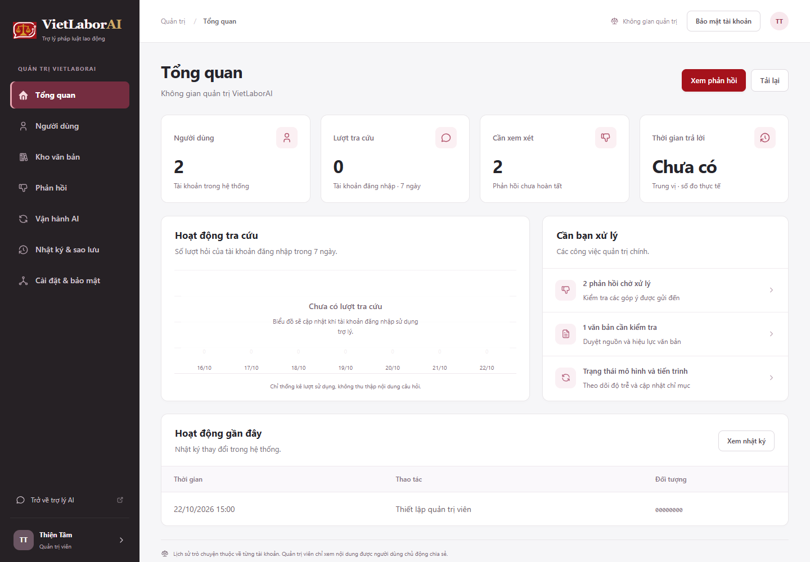
Tổng quan · màn hình rộng
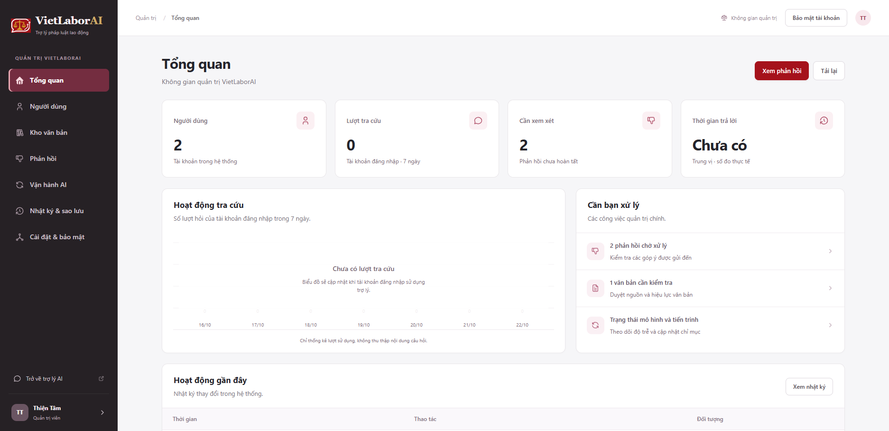
Người dùng
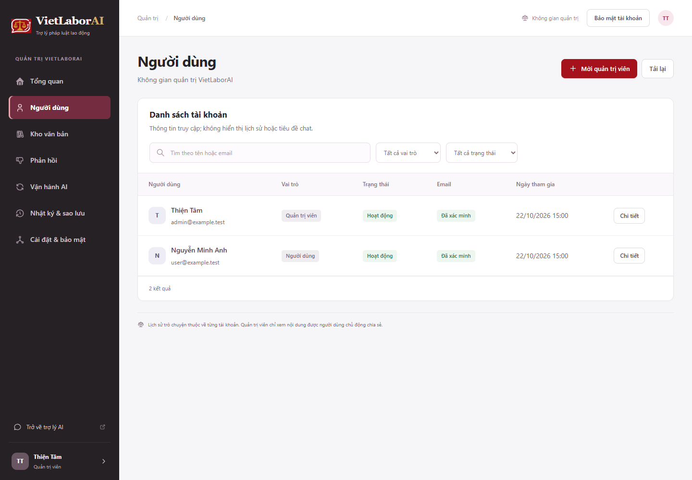
Chi tiết tài khoản
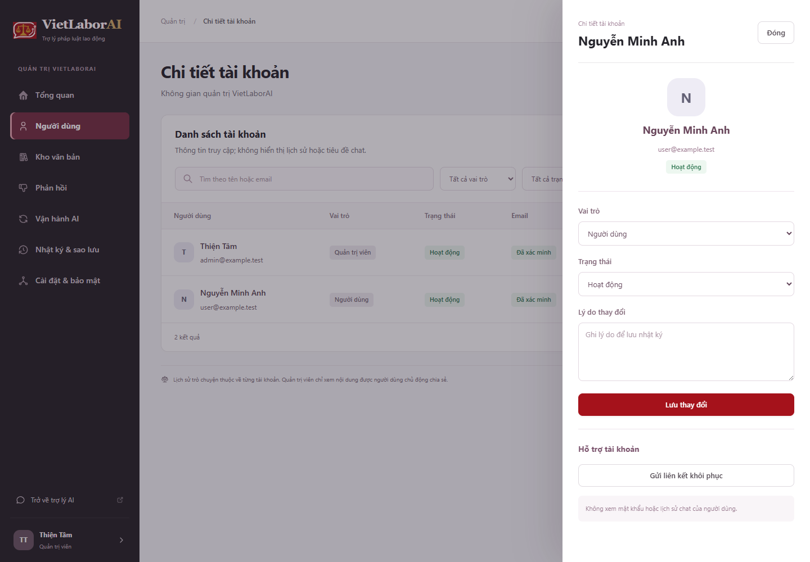
Kho văn bản
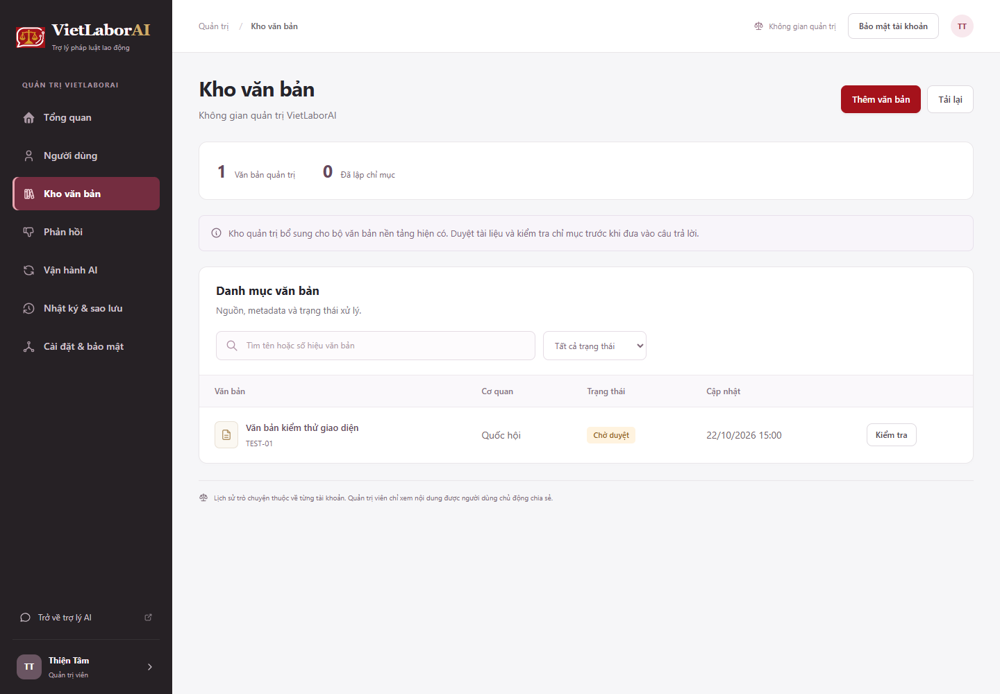
Kiểm tra và duyệt văn bản
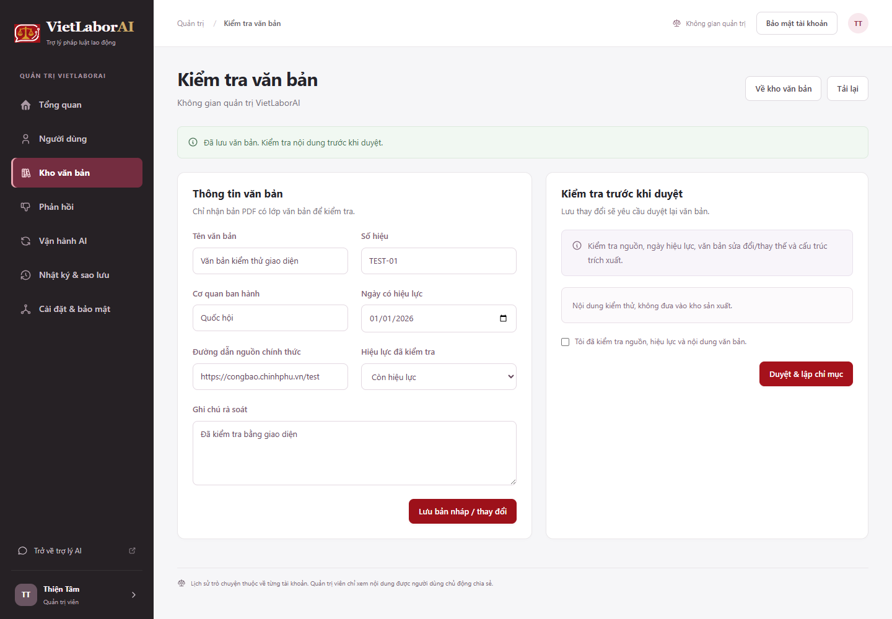
Xử lý phản hồi
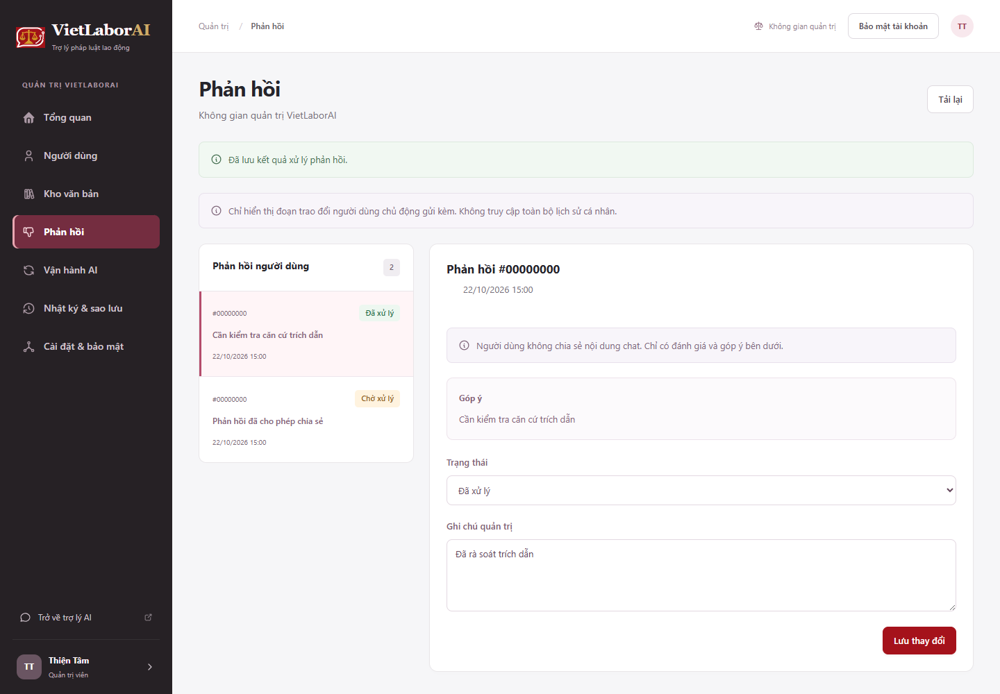
Vận hành AI
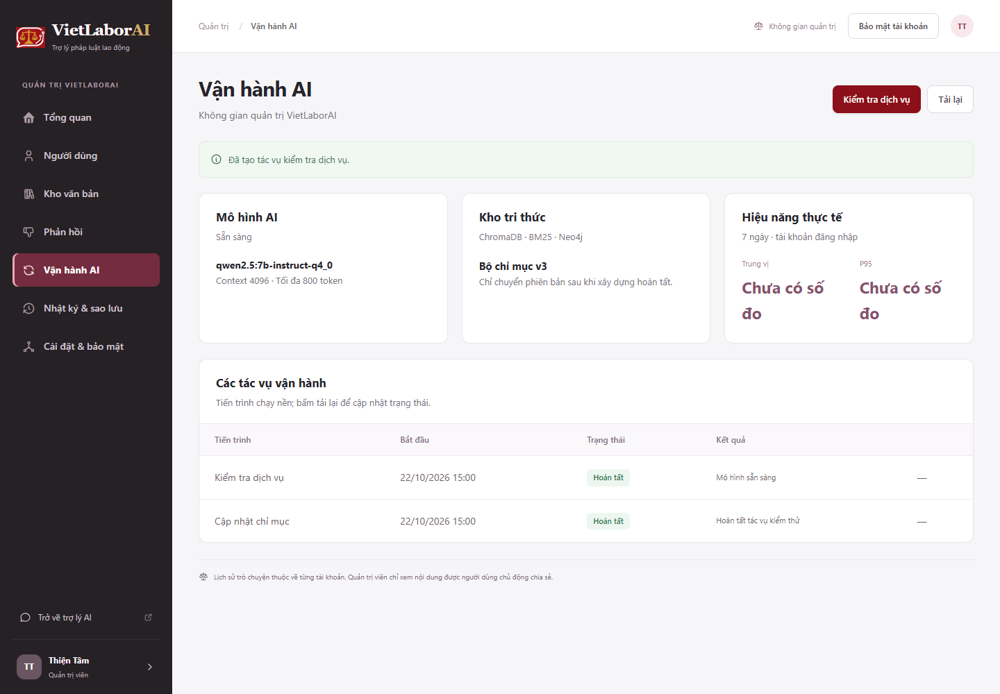
Nhật ký và sao lưu
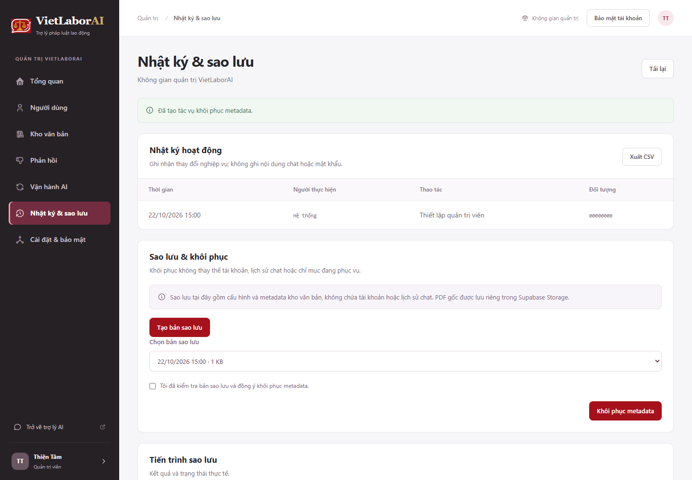
Cài đặt và phân quyền
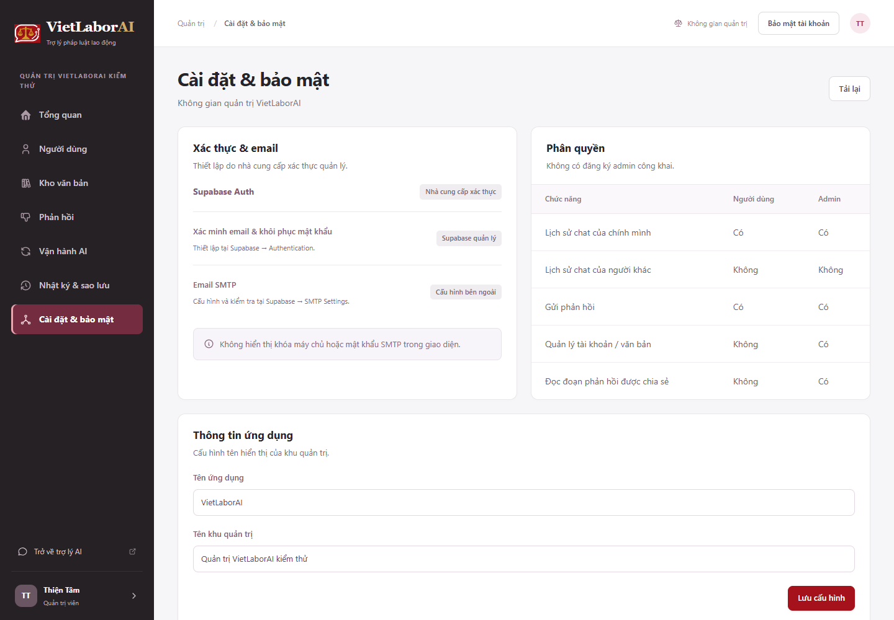
Hồ sơ cá nhân
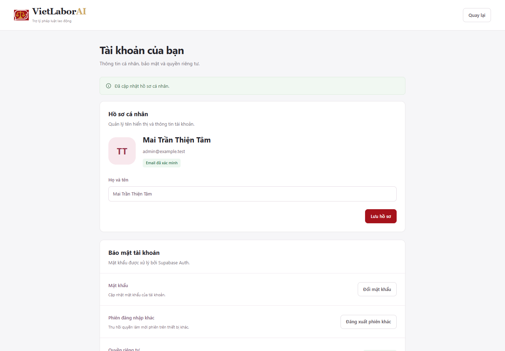
Đổi mật khẩu
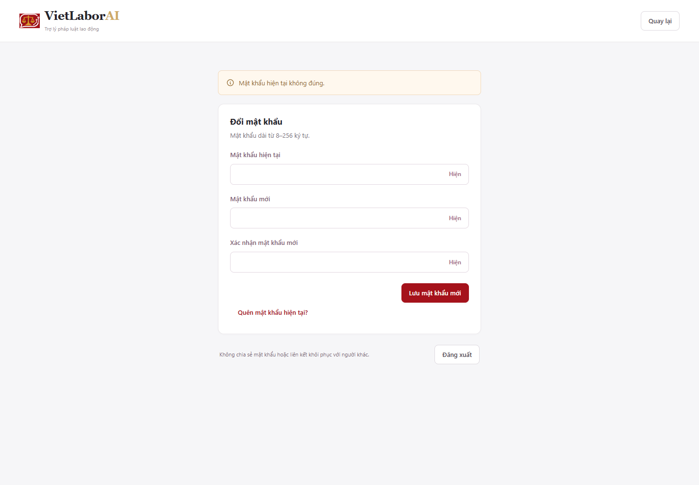
Đặt mật khẩu mới
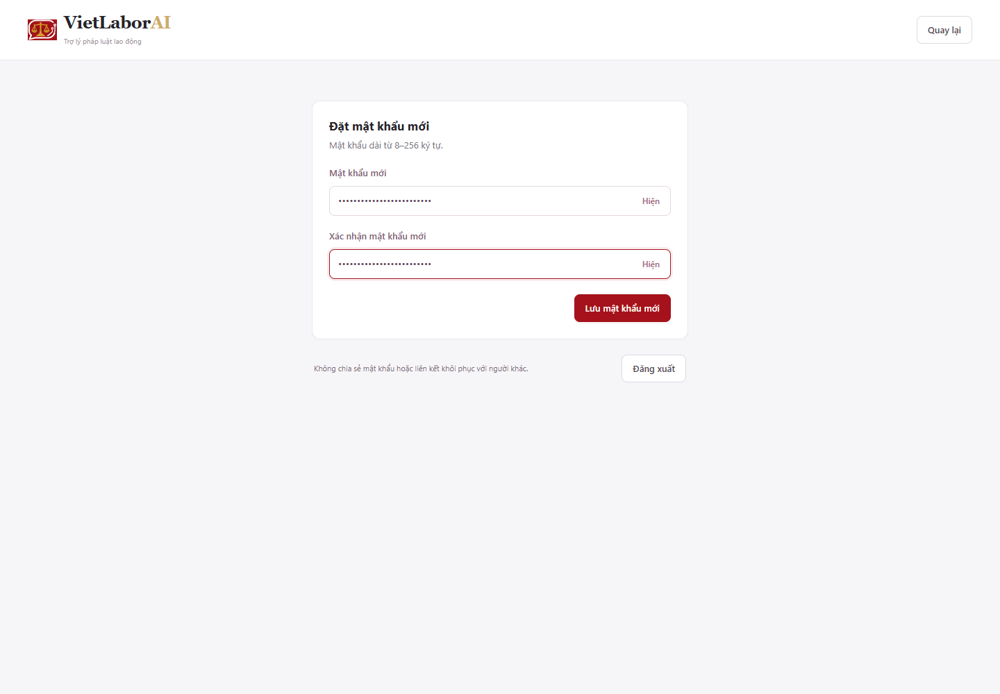
Tổng quan · điện thoại
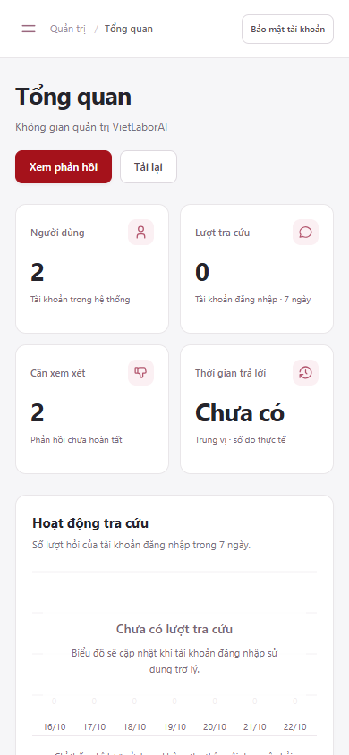
Người dùng · điện thoại
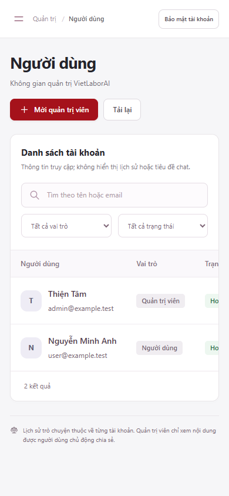
Biểu đồ có dữ liệu
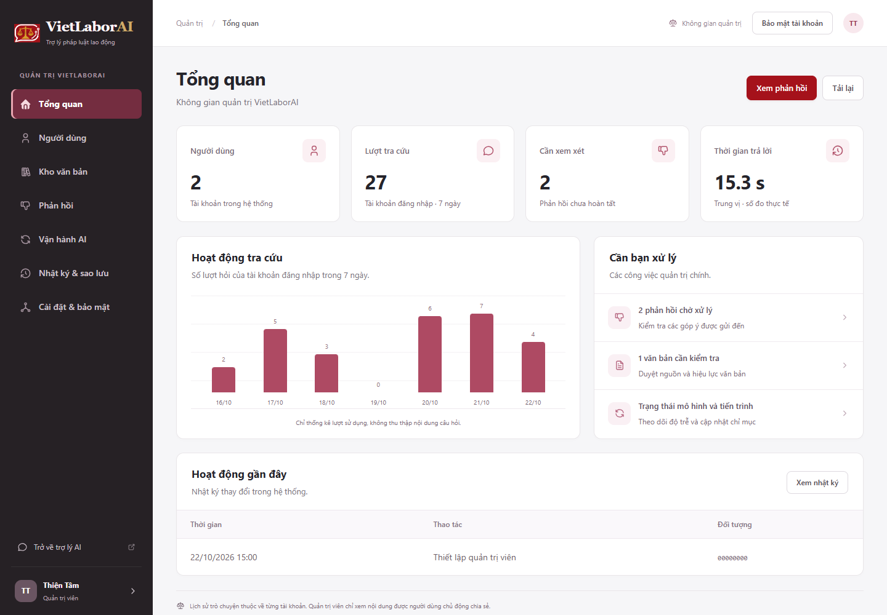